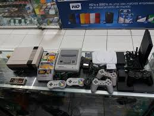

A Retro Games
A Retro Games é uma empresa brasileira emergente no rumo de revenda de jogos antigos, atualmente o principal objetivo da empresa é expandir seus negócios para o resto da Baixada Santista. Fundada em setembro de 2023, nossa empresa começou na pequena garagem de nosso fundador, Lucas L. Silva, mas com esforço e dedicação agora estamos trabalhando em um escritório e planejamos expandir muito mais além disso!
Nosso Sede principal fica em Praia Grande, São Paulo. De lá, saem 48 aviões que distribuem nossos produtos às casas do mundo todo. Nosso centro de distribuição: Praia Grande, em São Paulo
(Foto: Sede da Retro Games)
Se comunique com a gente caso tenha algum interesse em comprar algum jogo ou mesmo em vender seu próprio. Acesse nossa loja ou entre em contato se tiver dúvidas.
História
(Foto: Consoles na primeira loja da Retro Games)
A fundação da Retro Games em 2023 ocorreu durante um momento de crescente interesse pelo mercado de jogos retrô. Lucas Liria da Silva, apaixonado por jogos antigos e colecionador dedicado, decidiu investir todas as suas economias nesse nicho, que estava em ascensão. Com uma visão estratégica e inovadora, Lucas iniciou os negócios na garagem de sua casa em Praia Grande, contando com o apoio de três amigos próximos. Juntos, eles trabalharam incansavelmente para expandir a Retro Games, que rapidamente se tornou uma referência entre colecionadores.
Nos primeiros meses de operação, a empresa já atendia Praia Grande e algumas cidades vizinhas. À medida que o negócio crescia, Lucas percebeu o potencial lucrativo do comércio de jogos antigos e investiu na expansão da empresa, utilizando sua própria coleção como o primeiro estoque. Em pouco tempo, a Retro Games se consolidou no mercado regional, expandindo suas operações para cobrir todo o estado de São Paulo.
Diferenciais
- Curadoria Especializada: Nossa equipe é formada por colecionadores apaixonados, garantindo uma seleção de jogos e consoles retrô de alta qualidade e autenticidade.
- Acervo Exclusivo: Oferecemos títulos raros e difíceis de encontrar, com novas adições frequentes ao nosso catálogo.
- Compra e Venda Facilitada: Compramos coleções inteiras ou itens individuais, proporcionando uma experiência fácil e sem complicações para quem quer vender.
- Atendimento Personalizado: Suporte especializado para ajudar na escolha de itens e tirar dúvidas sobre manutenção e conservação dos jogos antigos.
- Centro de Distribuição Próprio: Com logística eficiente em Praia Grande, garantimos entregas rápidas e seguras em todo o estado de São Paulo.
- Conheça também nossa história